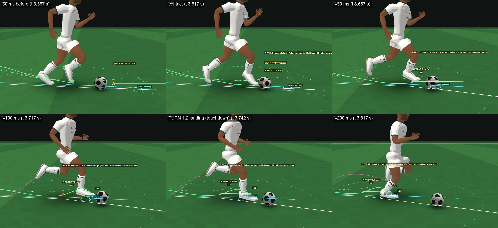

DRIBBLE-1.1 — contact-aware follow-through, cut reliability, resolver performance
17 October 2026, 04:55 EEST (instruction 01:26 EEST) · branch prototype/dribble-1 (DRIBBLE-1 frozen at 7fe57fd3, files untouched) · instruction review_artifacts/dribble11/sources/2026-10-17_user_instruction_dribble1_1_soft_touch_followthrough.md · local review page (real player names) · live labs: dribble11.html · dribble1.html (server on :8361 from the dribble-1 worktree)
TURN-1.2 UNCHANGED: YES
RESOLVED TOUCH ARCHITECTURE PRESERVED: YES
CONTACT-AWARE FOLLOW-THROUGH: PARTIAL
SOFT REDIRECT TOUCH: PARTIAL
SAME-FOOT SECOND CONTACT REDUCED: NO
45–60° TAKEN-WITH-BALL: 45° 7/8 · 60° 4/8 · 60° left 5/8 (DRIBBLE-1 5/8 · 5/8 · 3/8; seeds 1–16: 13/16 · 9/16 · 10/16 vs 7/16 · 8/16 · 8/16)
90° TAKEN-WITH-BALL: 2/8 · 90° left 4/8 (DRIBBLE-1 1/8 · 2/8; seeds 1–16: 5/16 · 5/16 vs 3/16 · 6/16)
STRAIGHT JOG REGRESSION: PASS
STRAIGHT RUN REGRESSION: FAIL
STRAIGHT FAST REGRESSION: PASS
INSIDE TOUCH: PARTIAL
OUTSIDE TOUCH: FAIL
LACES/FRONT TOUCH: PASS
PREFERRED-FOOT BIAS: FAIL
BALL PHYSICALLY FREE: YES
PHYSICAL INTERRUPTION: PASS
CONTROL LOSS STILL POSSIBLE: YES
CONTINUOUS INPUT: PARTIAL
OLD RESOLVER CPU: 465 ms per simulated second per dribbler (DRIBBLE-1; M4, one thread, Node 22)
NEW RESOLVER CPU: 144 ms per simulated second (0.60 ms per 240 Hz step; worst scenario 235; longest single planning pass 363 ms)
RESOLVER SPEEDUP: 3.2× (straight 1.6–2.7×, cuts 2.4–3.0×, 135° 7.9×)
22-PLAYER CPU PROJECTION: 0.77 s of one core per simulated second with one dribbler (22 × 28 ms locomotion + 144 ms resolver + 4 ms ball); 3.8 s if all 22 dribbled (DRIBBLE-1: 1.09 s / 10.8 s)
CHROME/NODE DECISION DETERMINISM: PASS
PINNED-BALL STABILITY: PASS
READY FOR OWNER VISUAL REVIEW: YES
READY FOR DRIBBLE-V1 INTEGRATION IF OWNER APPROVES: NO
I cannot play video in real time; every judgement on this page was made from frame strips and stills of these clips.
Three videos to watch first
DRIBBLE-1 (left) | DRIBBLE-1.1 (right), same scenario / seed / player, frame-synchronised, 1× speed, Touchline gameplay camera zoomed 2.6× · sim 0–6 s ·
A2_cut60_d1_vs_d11_zoom.mp4 · DRIBBLE-1 lab · DRIBBLE-1.1 labclose camera, 0.25× speed · sim 3.45–3.95 s ·
c_followthrough_cut60_slow.mp4 · open in the labDRIBBLE-1 (left) | DRIBBLE-1.1 (right), same scenario / seed / player, frame-synchronised, 1× speed, Touchline gameplay camera zoomed 2.6× · sim 0–6 s ·
B2_cut90_d1_vs_d11_zoom.mp4 · DRIBBLE-1 lab · DRIBBLE-1.1 labA — 60° hero: DRIBBLE-1 | DRIBBLE-1.1
DRIBBLE-1 (left) | DRIBBLE-1.1 (right), same scenario / seed / player, frame-synchronised, 1× speed, the real Touchline gameplay camera · sim 0–6 s ·
A1_cut60_d1_vs_d11_1x.mp4 · DRIBBLE-1 lab · DRIBBLE-1.1 labDRIBBLE-1 (left) | DRIBBLE-1.1 (right), same scenario / seed / player, frame-synchronised, 1× speed, Touchline gameplay camera zoomed 2.6× · sim 0–6 s ·
A2_cut60_d1_vs_d11_zoom.mp4 · DRIBBLE-1 lab · DRIBBLE-1.1 labgameplay camera + close views, diagnostics on · sim 1.5–6 s ·
a_cut60_s16_d11_layout.mp4 · open in the labB — 90° hero: DRIBBLE-1 | DRIBBLE-1.1
DRIBBLE-1 (left) | DRIBBLE-1.1 (right), same scenario / seed / player, frame-synchronised, 1× speed, the real Touchline gameplay camera · sim 0–6 s ·
B1_cut90_d1_vs_d11_1x.mp4 · DRIBBLE-1 lab · DRIBBLE-1.1 labDRIBBLE-1 (left) | DRIBBLE-1.1 (right), same scenario / seed / player, frame-synchronised, 1× speed, Touchline gameplay camera zoomed 2.6× · sim 0–6 s ·
B2_cut90_d1_vs_d11_zoom.mp4 · DRIBBLE-1 lab · DRIBBLE-1.1 labgameplay camera + close views, diagnostics on · sim 1.5–6 s ·
b_cut90_s3_d11_layout.mp4 · open in the labC — the follow-through close-up

close camera, 0.25× speed · sim 3.45–3.95 s ·
c_followthrough_cut60_slow.mp4 · open in the labclose camera, 0.25× speed · sim 3.45–3.95 s ·
c_followthrough_cut60_low.mp4 · open in the labclose camera, 0.25× speed · sim 4.05–4.55 s ·
c_followthrough_cut90_slow.mp4 · open in the labD — straight regression: JOG · RUN · FAST (1×)
1× Touchline gameplay camera · sim 0–8 s ·
d_straight_jog_1x.mp4 · open in the lab1× Touchline gameplay camera · sim 0–8 s ·
d_straight_run_1x.mp4 · open in the lab1× Touchline gameplay camera · sim 0–8 s ·
d_straight_fast_1x.mp4 · open in the labE — contact family: inside · outside · laces / front
close camera, 0.25× speed · sim 2.6–3.1 s ·
e_inside_cut45_slow.mp4 · open in the lab1× Touchline gameplay camera · sim 0–6 s ·
e_inside_cut45_1x.mp4 · open in the labclose camera, 0.25× speed · sim 4–4.5 s ·
e_inside_cut60L_slow.mp4 · open in the labclose camera, 0.25× speed · sim 4.2–4.7 s ·
e_laces_fast_slow.mp4 · open in the labclose camera, 0.25× speed · sim 2.25–2.75 s ·
e_front_run_slow.mp4 · open in the labAlso — interruption, sprint, reversals (experimental)
1× Touchline gameplay camera · sim 0–6 s ·
f_tackle_run_1x.mp4 · open in the lab1× Touchline gameplay camera · sim 0–6 s ·
f_intercept_run_1x.mp4 · open in the lab1× Touchline gameplay camera · sim 0–8 s ·
f_straight_sprint_1x.mp4 · open in the lab1× Touchline gameplay camera · sim 0–6 s ·
f_rev135_run_1x.mp4 · open in the labHow DRIBBLE-1.1 works
- DRIBBLE-1 is preserved.
dribble1/d1_core.jsand its lab are untouched (7fe57fd3). DRIBBLE-1.1 is a separate core,dribble11/d11_core.js, on the same frozen TURN-1.2 and byte-identical BALL-FEEL-1.3. The resolved touch architecture (one authoritative launch throughBallWorld.schedule()at a verified boot contact) is unchanged. - The optimisation twin. With
opts.twinthe new core runs DRIBBLE-1's football through the new planning machinery, and is bit-identical to the frozen DRIBBLE-1 core in every scenario: touches, kernel events, cut timeline, control changes, full 240 Hz record. The machinery: one shared, lazily extended TURN-1.2 prediction per input; pose evaluation without skinning; memoised window envelopes and free-ball launches; the approach check evaluated lazily in rank order. - Contact-aware follow-through. After the authoritative contact the touching leg's path is generated from the actual launch, not replayed:
• the post-contact time-warp gets a yield knot, so the foot keeps moving along its own path slower than its swing for a while;
• an arc moves it sideways away from the ball's new line, lifts it, and shortens it a little;
• both profiles are zero with zero velocity at the contact and finished by 95 % of the remaining swing, so the foot lands on TURN-1.2's unchanged plant at the unchanged time.
A five-rung ladder (none → arc → arc + yield) is solved per touch for the executed launch (error included); the gentlest rung that clears the ball is used. The foot is never faster than the swing's own natural peak (×1.1, or DRIBBLE-1's own catch-up if that was faster) and never leaves the leg's reach. The planted foot after touchdown must not meet the ball either. - The touching swing is committed. TURN-1.2 retargets a swing's landing whenever the input changes. DRIBBLE-1 released cuts (and pursuit bends) at the contact tick, so the touching foot was retargeted mid follow-through and could run ~80 mm ahead of the model and hit the ball again. Now the input is frozen from the contact to that foot's touchdown (≤ one step). Cut predictions switch at that touchdown, and every contact of a swing shares one branch prediction.
- Cuts.
• A held cut keeps the user's direction; the pursuit can no longer bend the requested cut.
• While a cut is held, contacts are also generated for a push toward the cut, so an inside or outside contact where the foot passes beside the ball can be found. Set-up touches aim at windows where such a contact will be feasible.
• A touch releases the whole cut only if the ball itself goes within 25° of the request. Otherwise it is a stage: the body leads the ball's new direction by 20° + 0.6 × the touch's redirect (≤ 45°).
• The hold compares the request with the cut's own line, not with the pursuit-bent line.
• Next-touch windows that make the ball cross the new line are costed. - Pursuit. After a touch that released or staged a cut, the carrier corrects the planned motion by the ball's actual miss (relative to the plan), instead of running straight at the ball. Ordinary dribbling keeps DRIBBLE-1's request-relative pursuit, with dead bands (1°, 0.15 m/s), so the input — and the shared prediction — stays unchanged when the correction would not matter. (Re-aim hysteresis at 2.5° / 0.3 m/s was tried and is off: it cost FAST straight dribbling 16 % control.)
- Planning cost (o2). Each of these changes which candidates are examined, never how a touch is resolved:
• the provisional aim comes from the contact sample's own motion;
• next-touch windows are probed on absolute 6-tick ticks, with a coarse-to-fine envelope;
• the contact search covers 1.0 s ahead, every 3 ticks and every 6 ticks of path phase;
• the follow-through ladder has 5 rungs, the best of 2 valid plans is kept, and unreachable polls run every 12 ticks;
• far prediction ticks evaluate the pose only on demand (bit-identical, re-stepped from stored states). - Pinched ball. The kernel still fails closed. DRIBBLE-1.1's step restores the world's exact prior state and re-runs the tick with this player's colliders that touch the ball held still (the leg yields). If that also fails, they are set just clear along the separating normal. The ball's state is never written, and each recovery is recorded.
- Determinism. Decisions read the player's speed to 0.01 m/s and compare costs to 1e-9, so a last-bit difference between engines' maths libraries cannot flip a choice.
Evidence
Reliability — every lab scenario, HIGH profile (Vinícius Júnior), resolved touches, seeds 1–16 (the owner's targets are X/8: seeds 1–8)
| scenario | DRIBBLE-1 (7fe57fd3) | DRIBBLE-1.1 | DRIBBLE-1.1 touches | ||||||||||
|---|---|---|---|---|---|---|---|---|---|---|---|---|---|
| controlled | held to end · seeds 1–8 / 1–16 | turn taken with ball · 1–8 / 1–16 | 2nd contacts ≤ 250 ms | controlled | held to end · 1–8 / 1–16 | turn taken with ball · 1–8 / 1–16 | 2nd contacts ≤ 250 ms | touch m/s | cut-touch m/s (n, ≥ 9 m/s) | regions | preferred foot | leg yields · faults | |
| STRAIGHT_JOG | 100 % | 8/8 · 16/16 | — · — | 0/145 | 100 % | 8/8 · 16/16 | — · — | 1/143 | 4.534 | — | FRONT 143 | 41 % | 0 · 0 |
| STRAIGHT_RUN | 99 % | 6/8 · 14/16 | — · — | 0/91 | 90 % | 5/8 · 13/16 | — · — | 2/94 | 7.423 | — | FRONT 93 · LACES 1 | 39 % | 0 · 0 |
| STRAIGHT_FAST | 91 % | 8/8 · 14/16 | — · — | 0/67 | 94 % | 7/8 · 13/16 | — · — | 0/67 | 10.73 | — | FRONT 63 · LACES 4 | 37 % | 0 · 0 |
| STRAIGHT_SPRINT | 90 % | 6/8 · 13/16 | — · — | 0/48 | 88 % | 4/8 · 12/16 | — · — | 0/54 | 13.337 | — | FRONT 46 · LACES 8 | 67 % | 0 · 0 |
| STRAIGHT_RUN_FAR | 99 % | 8/8 · 16/16 | — · — | 0/88 | 99 % | 7/8 · 15/16 | — · — | 2/99 | 7.544 | — | FRONT 98 · LACES 1 | 76 % | 0 · 0 |
| CURVE_RUN | 85 % | 7/8 · 9/16 | — · — | 0/83 | 82 % | 5/8 · 9/16 | — · — | 0/86 | 7.443 | 7.424 (30, 2) | FRONT 82 · LACES 3 · INSIDE 1 | 34 % | 0 · 0 |
| CURVE_JOG | 97 % | 7/8 · 14/16 | — · — | 0/118 | 86 % | 7/8 · 12/16 | — · — | 0/104 | 4.636 | 4.153 (31, 0) | FRONT 101 · LACES 2 · INSIDE 1 | 49 % | 0 · 0 |
| CUT45_RUN | 80 % | 5/8 · 7/16 | 5/8 · 7/16 | 0/65 | 93 % | 7/8 · 13/16 | 7/8 · 13/16 | 2/78 | 7.411 | 7.395 (25, 1) | FRONT 74 · INSIDE 2 · LACES 2 | 37 % | 0 · 0 |
| CUT60_RUN | 82 % | 5/8 · 9/16 | 5/8 · 8/16 | 0/70 | 88 % | 4/8 · 10/16 | 4/8 · 9/16 | 0/71 | 7.316 | 7.143 (24, 0) | FRONT 68 · LACES 2 · INSIDE 1 | 38 % | 0 · 0 |
| CUT60L_RUN | 83 % | 3/8 · 8/16 | 3/8 · 8/16 | 0/68 | 91 % | 7/8 · 13/16 | 5/8 · 10/16 | 1/75 | 7.351 | 7.245 (28, 1) | FRONT 72 · INSIDE 2 · LACES 1 | 28 % | 0 · 0 |
| CUT90_RUN | 76 % | 2/8 · 5/16 | 1/8 · 3/16 | 0/64 | 85 % | 3/8 · 10/16 | 2/8 · 5/16 | 1/66 | 7.387 | 7.44 (29, 2) | FRONT 64 · LACES 2 | 33 % | 0 · 0 |
| CUT90L_RUN | 82 % | 2/8 · 6/16 | 2/8 · 6/16 | 0/65 | 86 % | 5/8 · 9/16 | 4/8 · 5/16 | 2/73 | 7.257 | 7.147 (33, 2) | FRONT 71 · INSIDE 1 · LACES 1 | 26 % | 0 · 0 |
| CUT90_JOG | 58 % | 2/8 · 2/16 | 2/8 · 2/16 | 0/63 | 88 % | 5/8 · 11/16 | 5/8 · 10/16 | 0/92 | 4.6 | 4.501 (46, 0) | FRONT 89 · INSIDE 2 · LACES 1 | 48 % | 0 · 0 |
| REV135_RUN | 73 % | 1/8 · 3/16 | 0/8 · 0/16 | 0/64 | 83 % | 3/8 · 8/16 | 0/8 · 0/16 | 1/68 | 7.574 | 7.941 (31, 6) | FRONT 65 · LACES 3 | 35 % | 0 · 0 |
| REV180_SPRINT | 70 % | 1/8 · 2/16 | 0/8 · 0/16 | 0/33 | 74 % | 1/8 · 5/16 | 0/8 · 0/16 | 0/40 | 12.849 | 12.497 (22, 22) | FRONT 32 · LACES 8 | 75 % | 0 · 0 |
| CANCEL_RUN | 97 % | 7/8 · 15/16 | — · — | 0/69 | 93 % | 6/8 · 14/16 | — · — | 1/72 | 7.379 | 6.288 (1, 0) | FRONT 72 | 36 % | 0 · 0 |
| RETARGET_RUN | 79 % | 1/8 · 6/16 | 1/8 · 6/16 | 0/64 | 92 % | 6/8 · 11/16 | 5/8 · 9/16 | 0/79 | 7.351 | 7.091 (30, 2) | FRONT 75 · INSIDE 1 · LACES 3 | 29 % | 0 · 0 |
| INTERCEPT_RUN | 81 % | 6/8 · 12/16 | — · — | 0/63 | 81 % | 5/8 · 12/16 | — · — | 1/69 | 7.349 | — | FRONT 69 | 33 % | 0 · 0 |
| TACKLE_RUN | 71 % | 2/8 · 5/16 | — · — | 0/56 | 72 % | 4/8 · 7/16 | — · — | 1/61 | 7.391 | — | FRONT 61 | 31 % | 0 · 0 |
| CUT60_RUN_FAR | 73 % | 2/8 · 5/16 | 1/8 · 3/16 | 0/63 | 95 % | 6/8 · 13/16 | 6/8 · 13/16 | 2/83 | 7.33 | 6.979 (28, 2) | FRONT 81 · INSIDE 1 · LACES 1 | 73 % | 0 · 0 |
Cut touches, second contacts and the follow-through clearance — all cut scenarios, all seeds
| core | cut / stage touches | launch m/s mean · median | ≥ 9 m/s | |lateral| m/s | ball ↔ touching boot at +50 / +100 / +200 ms (m, median) | same-foot 2nd contact ≤ 250 ms (all touches · cut touches) | other-foot ≤ 250 ms | boot / toe clearance after the contact, median mm (+ms) | min clearance 0–250 ms, median |
|---|---|---|---|---|---|---|---|---|---|
| DRIBBLE-1 | 104 | 6.33 · 6.09 | 8 | 3.13 | 0.45 / 0.59 / 1.09 | 0/1447 · 0/104 | 1/1447 | 25: 78.95 · 50: 150.94 · 100: 180.27 · 150: 489.8 · 200: 799.08 | 17.69 |
| DRIBBLE-1.1 | 213 | 6.63 · 6.77 | 8 | 3.58 | 0.45 / 0.48 / 1.02 | 17/1574 · 5/213 | 1/1574 | 25: 44.71 · 50: 93.08 · 100: 156.94 · 150: 424.08 · 200: 737.78 | 14.59 |
Attributes
| profile (DRIBBLE-1.1, 8 seeds) | player | STRAIGHT_RUN controlled | held · taken | CUT60_RUN controlled | held · taken | CUT90_RUN controlled | held · taken |
|---|---|---|---|---|---|---|---|
| HIGH | Vinícius Júnior | 81 % | 5/8 · — | 81 % | 4/8 · 4/8 | 73 % | 3/8 · 2/8 |
| AVERAGE | Viktor Gyökeres | 80 % | 5/8 · — | 73 % | 2/8 · 2/8 | 68 % | 2/8 · 0/8 |
| POOR | Jonathan Tah | 55 % | 2/8 · — | 60 % | 0/8 · 0/8 | 57 % | 0/8 · 0/8 |
| WEAKFOOT | Dani Carvajal | 58 % | 3/8 · — | 61 % | 1/8 · 1/8 | 63 % | 1/8 · 0/8 |
| LEFT_HIGH | Ousmane Dembélé | 100 % | 8/8 · — | 100 % | 8/8 · 8/8 | 95 % | 6/8 · 3/8 |
CPU — one dribbler + ball, both cores in one process (Node v22.19.0)
| scenario | DRIBBLE-1 resolver ms / sim s | DRIBBLE-1.1 resolver ms / sim s | speed-up | µs / 240 Hz step | planning passes / s | new tracks / s | predicted ticks / s | longest pass ms |
|---|---|---|---|---|---|---|---|---|
| STRAIGHT_JOG | 170.4 | 94.4 | ×1.81 | 393.4 | 1.56 | 0.88 | 579 | 112 |
| STRAIGHT_RUN | 242.5 | 101.8 | ×2.38 | 424.2 | 4.56 | 1.06 | 694 | 113 |
| STRAIGHT_FAST | 147.1 | 89.4 | ×1.65 | 372.6 | 7.75 | 0.88 | 598 | 157.9 |
| STRAIGHT_SPRINT | 264.8 | 99.6 | ×2.66 | 414.9 | 15.38 | 1.19 | 663 | 110.4 |
| STRAIGHT_RUN_FAR | 165.8 | 104.3 | ×1.59 | 434.6 | 3.94 | 0.88 | 647 | 88.4 |
| CUT60_RUN_FAR | 1245.2 | 153.5 | ×8.11 | 639.5 | 4.85 | 2.62 | 1148 | 196.2 |
| CURVE_RUN | 363.3 | 199.9 | ×1.82 | 833.1 | 7.94 | 3.56 | 1112 | 192.5 |
| CURVE_JOG | 411.3 | 109.4 | ×3.76 | 455.8 | 6.43 | 1.43 | 668 | 116.5 |
| CUT45_RUN | 415.8 | 166.8 | ×2.49 | 695.1 | 5.17 | 2.83 | 1186 | 197 |
| CUT60_RUN | 481.6 | 159.2 | ×3.03 | 663.3 | 6.58 | 2.92 | 1183 | 193 |
| CUT60L_RUN | 424.4 | 176 | ×2.41 | 733.3 | 5 | 3.58 | 1344 | 242.8 |
| CUT90_RUN | 541.5 | 205.5 | ×2.64 | 856.1 | 9 | 3.92 | 1481 | 363.1 |
| CUT90_JOG | 570.7 | 202.8 | ×2.81 | 845.2 | 5.08 | 3.58 | 1073 | 151.9 |
| CUT90L_RUN | 488.1 | 181.6 | ×2.69 | 756.6 | 4.08 | 3.58 | 1449 | 212.8 |
| REV135_RUN | 1852 | 234.8 | ×7.89 | 978.2 | 10.17 | 6 | 1669 | 222.7 |
| REV180_SPRINT | 514.3 | 148.2 | ×3.47 | 617.7 | 12.07 | 2.79 | 1111 | 199.1 |
| CANCEL_RUN | 441.4 | 129.6 | ×3.41 | 540.2 | 4.33 | 1.83 | 922 | 192.6 |
| RETARGET_RUN | 616.1 | 203.2 | ×3.03 | 846.8 | 6.42 | 4.08 | 1511 | 222.9 |
| INTERCEPT_RUN | 149.3 | 85.3 | ×1.75 | 355.2 | 7.58 | 0.92 | 652 | 80.5 |
| TACKLE_RUN | 200 | 103.3 | ×1.94 | 430.5 | 6.58 | 1.42 | 796 | 87.1 |
| ALL | 464.6 | 144.3 | ×3.22 | 601.2 | 6.77 | 2.39 | 995 | 363.1 |
The optimisation twin
opts.twin (the shared lazy tracks and the result-preserving optimisations only) against the frozen DRIBBLE-1 core: 40/40 runs bit-identical (every scenario × 2 seeds: touches, kernel events, cut timeline, control changes, the full 240 Hz record).Chrome / Node
DRIBBLE-1 (re-measured): Node v22.19.0 vs Chrome/155.0.8059.80 — decisions 20/20 identical (every touch tick, foot, region, launch / cancel; the cut timeline; control changes); state bit-identical in 3/20, otherwise last-bit differences (largest 2.4e-11 m) from the engines' maths libraries.
The state differences start in the last bit of the ball's vertical velocity (≈ 3e-18) or of TURN-1.2's heading ψ (4.4e-16) — the two engines' Math libraries (V8 12.4 vs 15.5) — and grow to at most 3e-12 m in 6–8 s. They are floating-point differences, not branching: no decision differs. DRIBBLE-1's reported 2/20 'differences' were the same last-bit effect showing in a 9-decimal hash (its decisions are 20/20 identical as well). DRIBBLE-1.1's decisions read speed to 0.01 m/s and costs to 1e-9 so that such differences cannot flip a choice.
No tether — the free-ball audit
TURN-1.2 unchanged
Pinched ball
Defects and next step
Three biggest remaining V1 visual defects
- Still the toe push: 97 % of DRIBBLE-1.1 touches are FRONT (1,519 of 1,574); inside 12 (DRIBBLE-1: 53), laces 43 (FAST / SPRINT forward pushes), outside none at all. The softer follow-through did not make the other regions feasible — they fail on the ball's position relative to the foot (reach, ground, the toe touching first), not on the follow-through.
- Cuts are staged and the body visibly leads the ball: the first cut touch typically takes the ball only 5–20°, the body turns 20–45° beyond it, and the next touch re-collects it ~0.6–1.2 s later; when that touch is missed the player has run away from his ball. First response ~0.8–0.9 s after the request (DRIBBLE-1 ~1.2–1.4 s).
- Straight RUN is less tidy than DRIBBLE-1 in some seeds (80 % controlled on seeds 1–8 vs 97 %): a swing predicted to run into the ball blocks every plan, has no feasible touch of its own in the coarser o2 search, and then kicks the ball; and a small toe re-contact 8–46 ms after 1 % of touches (mostly with the follow-through arc in use) nudges the ball off line.
Exact next shipping step
DRIBBLE-1.2 — cut geometry, not follow-through. The follow-through now lets soft touches clear the leg, but cuts are still limited by WHERE the ball is when the foot can reach it: on the approach only the toe can meet a ball rolling ahead, so the first redirect is 5–20° and the rest is staged. The evidence points at the fix: a left-footed elite player takes the right 60° cut 8/8 and the right-footed one the left cut 5/8 — the preferred foot's INSIDE works; the right-footer's OUTSIDE never becomes feasible. So: (1) make the outside-of-the-foot cut contact feasible (contact low on the boot's outer edge with the foot turned out — today it fails ground / reach / the toe touching first) and plan the set-up touch to place the ball on the cutting foot's line; (2) remove the two regressions (the blocker swing that kicks the ball in straight RUN; the 1 % toe re-contacts with the arc) and restore DRIBBLE-1's straight RUN; (3) CPU: spread a heavy planning pass over several ticks (no 363 ms spikes) and keep the opportunity results across passes while the track and ball are unchanged. Target: 60° ≥ 7/8, 90° ≥ 5/8, straight RUN back to ≥ 95 %, second contacts 0.
Provenance
- Owner instruction (verbatim):
review_artifacts/dribble11/sources/2026-10-17_user_instruction_dribble1_1_soft_touch_followthrough.md(commit e134462c). - Branch
prototype/dribble-1; DRIBBLE-1 frozen at 7fe57fd3 (dribble1/,dribble1.htmluntouched). DRIBBLE-1.1 commits: e134462c (instruction), 511923ec (optimisation twin O1), d867aa23, ecb4f1e2, bb3efc73, 45c0d724 (configuration for review), and the review package. - Frozen and untouched: TURN-1.2 (tag locomotion-turn12-baseline-1, 2129ca04), RUN-1, BALL-FEEL-1.3 (byte-identical, 75866e99), tackle / ball labs (Codex).
- Evidence produced by
sandbox/visual/dribble11/tools/: d11_evidence.mjs (reliability, free-ball audit), d11_twin.mjs, d11_cpu.mjs, d11_chrome.cjs, d11_plantcheck.mjs, d11_pinch.mjs; videos by d11_render.sh + d11_capture.cjs; stills by d11_strip.mjs; this page by d11_review_build.mjs. evidence/old_bb3efc73/keeps the first DRIBBLE-1.1 batch (commit bb3efc73), which is superseded: a cut-window cost parameter was undefined there (NaN costs in cuts).